見つけ方
見つけ方は
3ステップ。
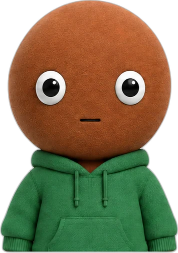
動画の商品名を
入れる 例：テント／
モニターアーム 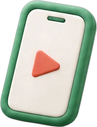
調査記事を
ひらく 候補をどう絞ったかが
順に読めます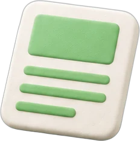
比べた5商品から
選ぶ 選び方の違う5商品を
並べています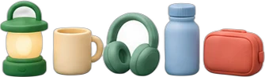
調べた商品を
ぜんぶ
並べました。
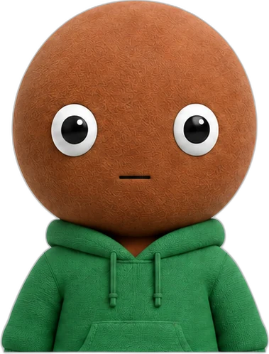
79本を表示中
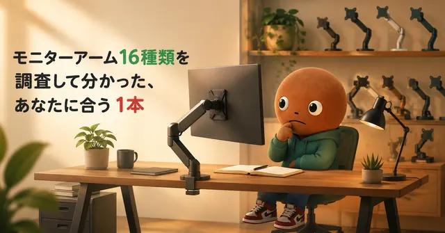
デスクまわりモニターアーム
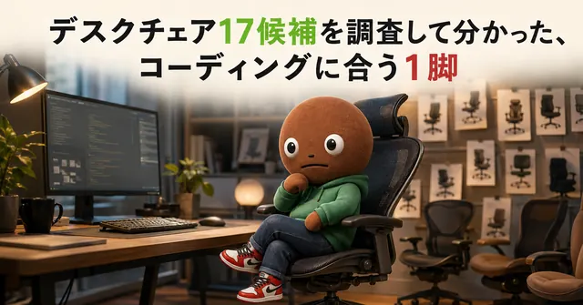
デスクまわりデスクチェア
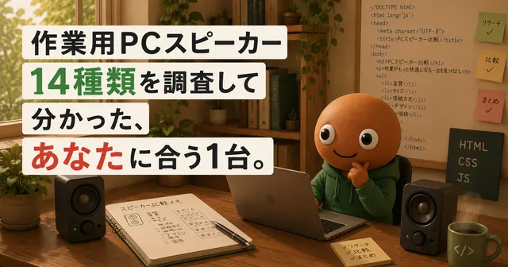
デスクまわりPCスピーカー
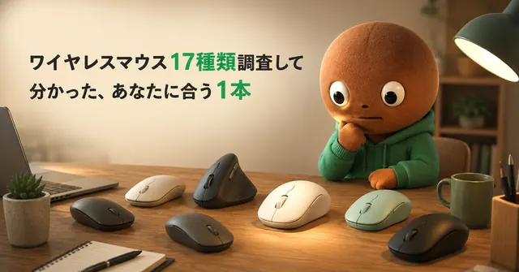
デスクまわりワイヤレスマウス
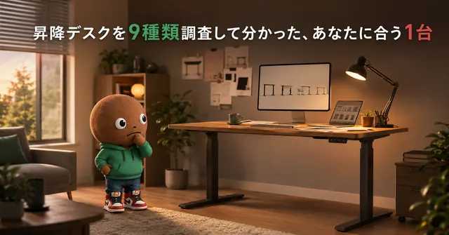
デスクまわり昇降デスク
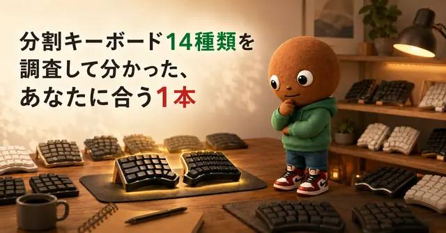
デスクまわり分割キーボード
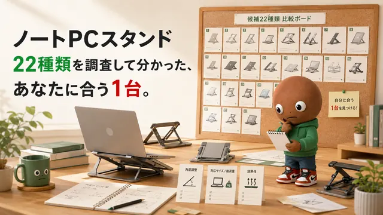
デスクまわりノートPCスタンド
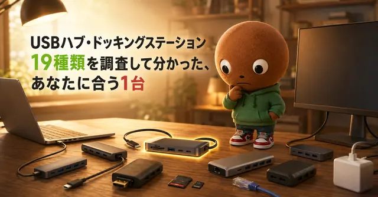
デスクまわりUSBハブ
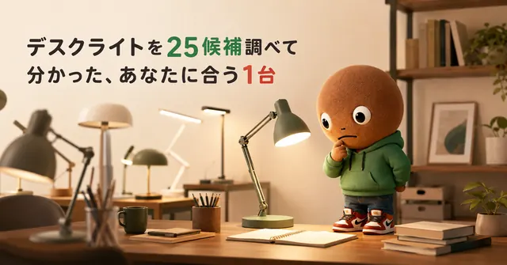
デスクまわりデスクライト
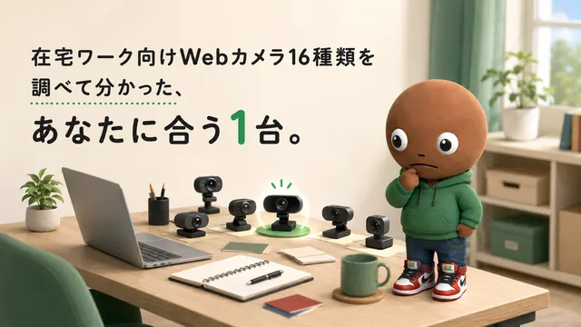
デスクまわりWebカメラ
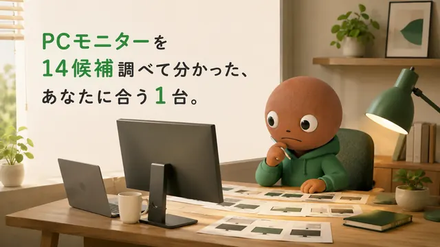
デスクまわりPCモニター
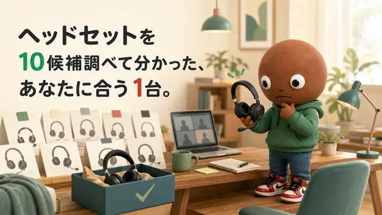
デスクまわりヘッドセット
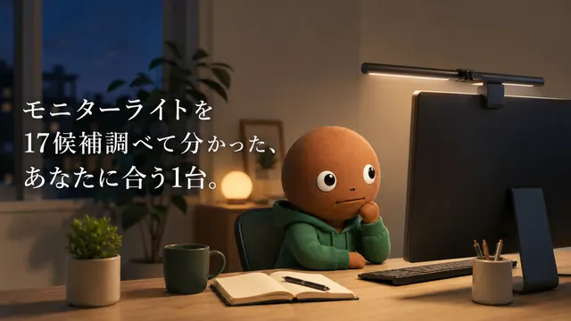
デスクまわりモニターライト
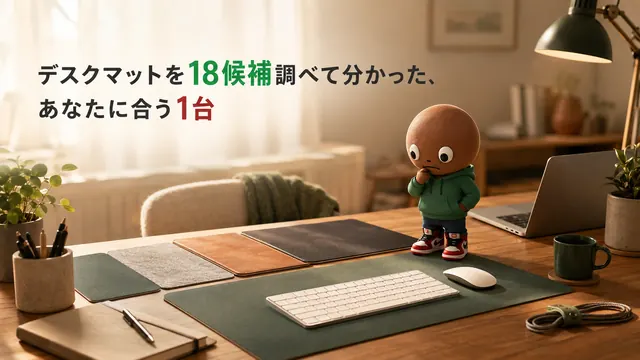
デスクまわりデスクマット
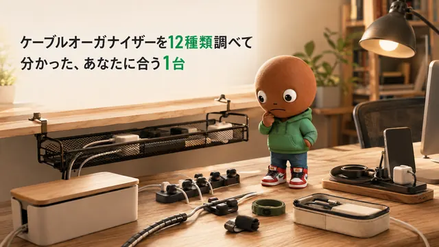
デスクまわりケーブルオーガナイザー
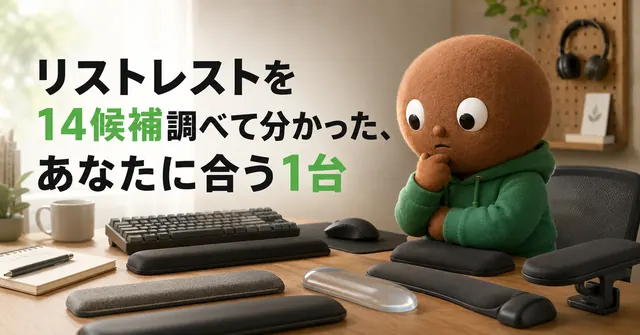
デスクまわりリストレスト
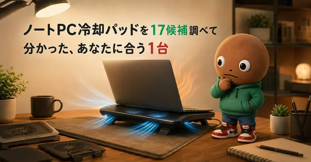
デスクまわりノートPC冷却パッド
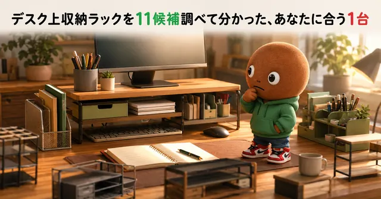
デスクまわりデスク収納ラック
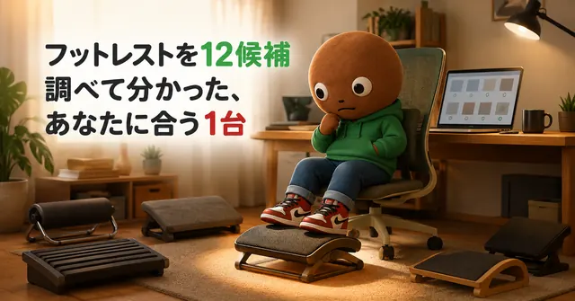
デスクまわりフットレスト
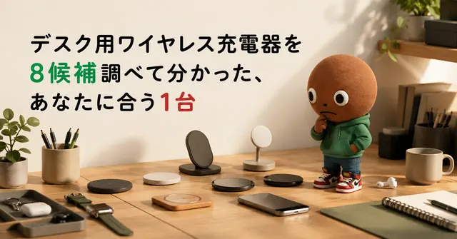
デスクまわりワイヤレス充電器
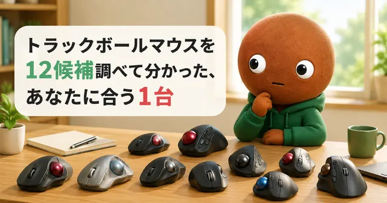
デスクまわりトラックボールマウス
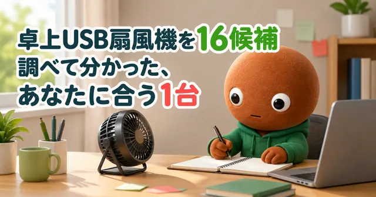
デスクまわり卓上USB扇風機
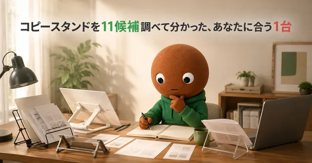
デスクまわりコピースタンド
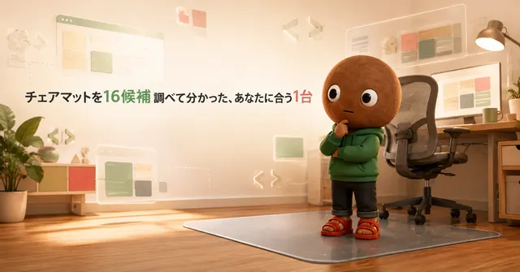
デスクまわりチェアマット
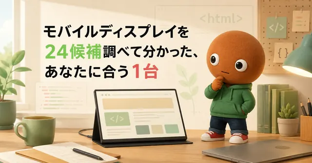
デスクまわりモバイルディスプレイ
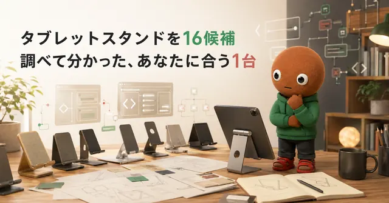
デスクまわりタブレットスタンド
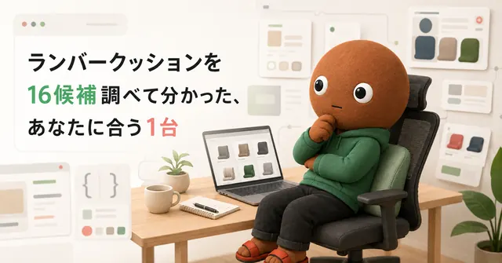
デスクまわりランバークッション
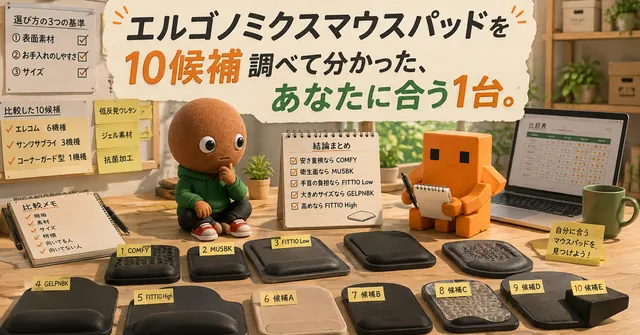
デスクまわりエルゴノミクスマウスパッド
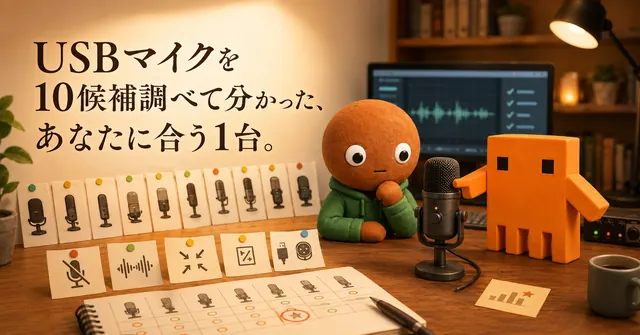
デスクまわりUSBマイク
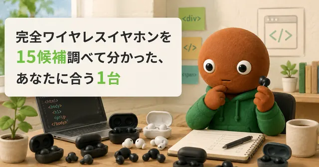
くらし完全ワイヤレスイヤホン
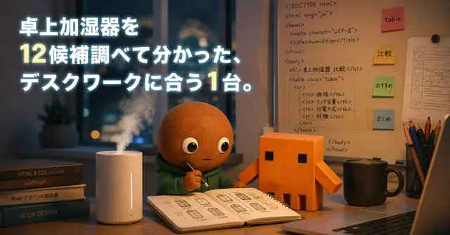
くらし卓上加湿器
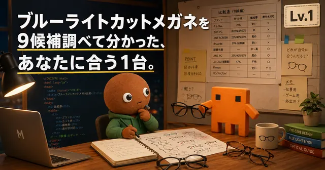
くらしブルーライトカットメガネ
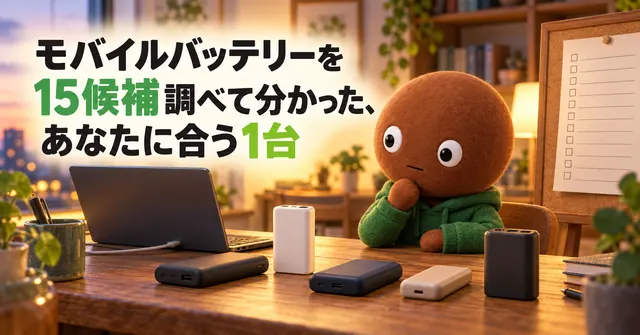
くらしモバイルバッテリー
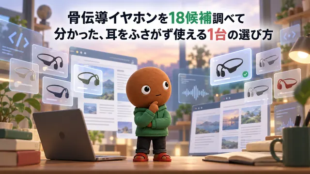
くらし骨伝導イヤホン
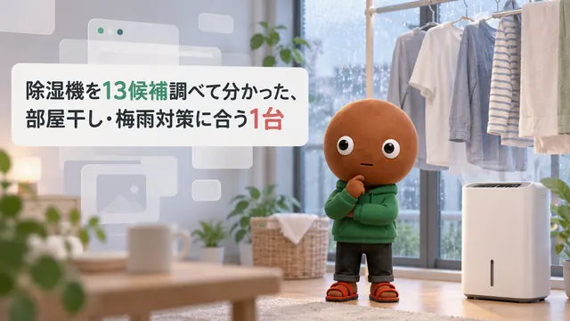
くらし除湿機
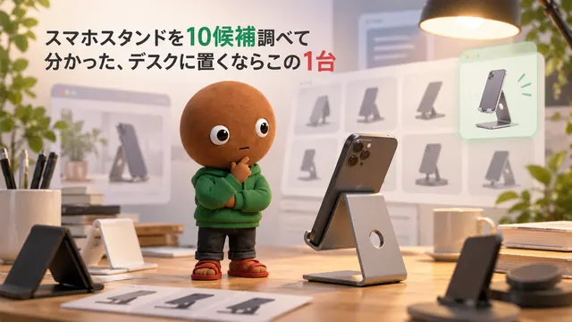
くらしスマホスタンド
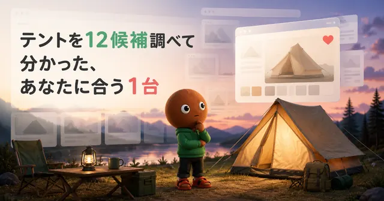
キャンプテント
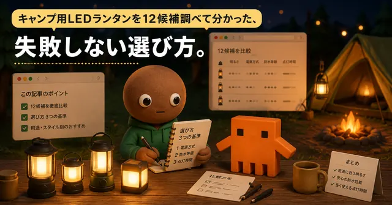
キャンプLEDランタン
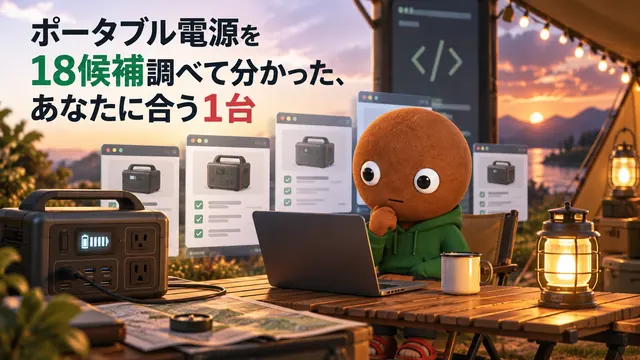
キャンプポータブル電源
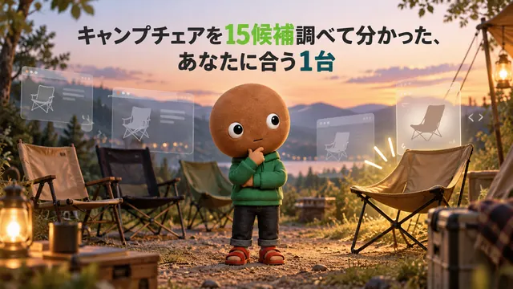
キャンプキャンプチェア
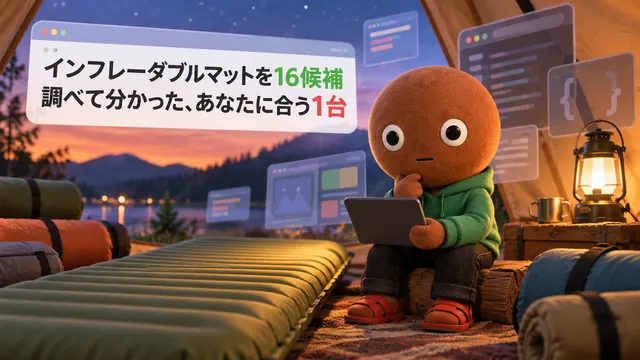
キャンプインフレーダブルマット
- キャンプ
焚火台
- くらし
Bluetoothスピーカー
- くらし
電気ケトル
- デスクまわり
電源タップ
- デスクまわり
シュレッダー
- デスクまわり
ヘッドホンスタンド
- デスクまわり
ノートPCバッグ
- デスクまわり
卓上空気清浄機
- デスクまわり
サーキュレーター
- キャンプ
寝袋シュラフ
- キャンプ
アイロンストーブ
- キャンプ
クーラーボックス
- キャンプ
キャンプテーブル
- キャンプ
シングルバーナー
- デスクまわり
デスクパーテーション
- デスクまわり
ケーブルトレー
- キャンプ
タープ
- キャンプ
ヘッドライト
- くらし
ふとん乾燥機
- キャンプ
焚き火シート
- キャンプ
ペグ＋ハンマー
- キャンプ
キャンプクッカー
- デスクまわり
GaN充電器
- デスクまわり
マイクアーム
- くらし
折りたたみ傘
- デスクまわり
外付けSSD
- キャンプ
ウォータージャグ
- キャンプ
アウトドアワゴン
- キャンプ
ハンモック
- デスクまわり
マクロパッド
- キャンプ
スキレット・ダッチオーブン
- キャンプ
キャンプ用コーヒー器具
- くらし
卓上ミニ冷蔵庫
- キャンプ
ソーラーパネル
- デスクまわり
足元ヒーター
- くらし
電気ブランケット
- キャンプ
ギアコンテナ
- くらし
湯たんぽ
ミートボーとは？